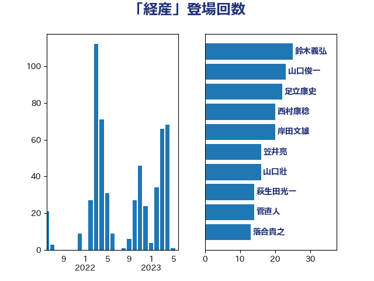

単語「経産」

| 鈴木義弘 | 国民民主党 | 25 回 |
| 山口俊一 | 自由民主党 | 23 回 |
| 足立康史 | 日本維新の会 | 22 回 |
| 西村康稔 | 自由民主党 | 20 回 |
| 岸田文雄 | 自由民主党 | 20 回 |
| 笠井亮 | 日本共産党 | 16 回 |
| 山口壯 | 自由民主党 | 16 回 |
| 萩生田光一 | 自由民主党 | 14 回 |
| 菅直人 | 立憲民主党 | 14 回 |
| 落合貴之 | 立憲民主党 | 13 回 |
| 礒崎哲史 | 国民民主党 | 13 回 |
| 石井章 | 日本維新の会 | 13 回 |
| 田嶋要 | 立憲民主党 | 13 回 |
| 山崎誠 | 立憲民主党 | 13 回 |
| 徳永エリ | 立憲民主党 | 9 回 |
| 小沼巧 | 立憲民主党 | 9 回 |
| 森本真治 | 立憲民主党 | 8 回 |
| 塩田博昭 | 公明党 | 7 回 |
| 阿部知子 | 立憲民主党 | 6 回 |
| 小野泰輔 | 日本維新の会 | 6 回 |
| 音喜多駿 | 日本維新の会 | 5 回 |
| 野村哲郎 | 自由民主党 | 5 回 |
| 遠藤良太 | 日本維新の会 | 5 回 |
| 荒井優 | 立憲民主党 | 5 回 |
| 福山哲郎 | 立憲民主党 | 5 回 |
| 中野洋昌 | 公明党 | 5 回 |
| 青山繁晴 | 自由民主党 | 4 回 |
| 鈴木俊一 | 自由民主党 | 4 回 |
| 野田佳彦 | 立憲民主党 | 4 回 |
| 里見隆治 | 公明党 | 4 回 |
| 藤岡隆雄 | 立憲民主党 | 4 回 |
| 緑川貴士 | 立憲民主党 | 4 回 |
| 佐藤正久 | 自由民主党 | 4 回 |
| 青柳陽一郎 | 立憲民主党 | 3 回 |
| 阿部司 | 日本維新の会 | 3 回 |
| 鈴木敦 | 国民民主党 | 3 回 |
| 金子恵美 | 立憲民主党 | 3 回 |
| 逢坂誠二 | 立憲民主党 | 3 回 |
| 神津たけし | 立憲民主党 | 3 回 |
| 石川昭政 | 自由民主党 | 3 回 |
| 滝波宏文 | 自由民主党 | 3 回 |
| 斉藤鉄夫 | 公明党 | 3 回 |
| 後藤祐一 | 立憲民主党 | 3 回 |
| 市村浩一郎 | 日本維新の会 | 3 回 |
| 川田龍平 | 立憲民主党 | 3 回 |
| 岩渕友 | 日本共産党 | 3 回 |
| 山添拓 | 日本共産党 | 3 回 |
| 小林鷹之 | 自由民主党 | 3 回 |
| 大島敦 | 立憲民主党 | 3 回 |
| 吉良よし子 | 日本共産党 | 3 回 |
| 中川康洋 | 公明党 | 3 回 |
| 高橋千鶴子 | 日本共産党 | 2 回 |
| 高木陽介 | 公明党 | 2 回 |
| 辻元清美 | 立憲民主党 | 2 回 |
| 谷公一 | 自由民主党 | 2 回 |
| 蓮舫 | 立憲民主党 | 2 回 |
| 福田昭夫 | 立憲民主党 | 2 回 |
| 石橋通宏 | 立憲民主党 | 2 回 |
| 田名部匡代 | 立憲民主党 | 2 回 |
| 玄葉光一郎 | 立憲民主党 | 2 回 |
| 清水貴之 | 日本維新の会 | 2 回 |
| 浜口誠 | 国民民主党 | 2 回 |
| 浅野哲 | 国民民主党 | 2 回 |
| 池畑浩太朗 | 日本維新の会 | 2 回 |
| 櫛渕万里 | れいわ新選組 | 2 回 |
| 柚木道義 | 立憲民主党 | 2 回 |
| 林芳正 | 自由民主党 | 2 回 |
| 松野博一 | 自由民主党 | 2 回 |
| 松本剛明 | 自由民主党 | 2 回 |
| 村田享子 | 立憲民主党 | 2 回 |
| 斎藤アレックス | 国民民主党 | 2 回 |
| 平林晃 | 公明党 | 2 回 |
| 山本太郎 | れいわ新選組 | 2 回 |
| 宮本岳志 | 日本共産党 | 2 回 |
| 吉良州司 | 無所属 | 2 回 |
| 吉田はるみ | 立憲民主党 | 2 回 |
| 勝部賢志 | 立憲民主党 | 2 回 |
| 前川清成 | 日本維新の会 | 2 回 |
| 世耕弘成 | 自由民主党 | 2 回 |
| 青木愛 | 立憲民主党 | 1 回 |
| 長坂康正 | 自由民主党 | 1 回 |
| 金村龍那 | 日本維新の会 | 1 回 |
| 金子俊平 | 自由民主党 | 1 回 |
| 重徳和彦 | 立憲民主党 | 1 回 |
| 近藤昭一 | 立憲民主党 | 1 回 |
| 近藤和也 | 立憲民主党 | 1 回 |
| 赤羽一嘉 | 公明党 | 1 回 |
| 谷田川元 | 立憲民主党 | 1 回 |
| 西銘恒三郎 | 自由民主党 | 1 回 |
| 西村明宏 | 自由民主党 | 1 回 |
| 西岡秀子 | 国民民主党 | 1 回 |
| 若松謙維 | 公明党 | 1 回 |
| 芳賀道也 | 国民民主党 | 1 回 |
| 船橋利実 | 自由民主党 | 1 回 |
| 竹詰仁 | 国民民主党 | 1 回 |
| 福島伸享 | 無所属 | 1 回 |
| 石川香織 | 立憲民主党 | 1 回 |
| 石川大我 | 立憲民主党 | 1 回 |
| 石川博崇 | 公明党 | 1 回 |
| 石井苗子 | 日本維新の会 | 1 回 |
| 矢倉克夫 | 公明党 | 1 回 |
| 田村貴昭 | 日本共産党 | 1 回 |
| 田村智子 | 日本共産党 | 1 回 |
| 田島麻衣子 | 立憲民主党 | 1 回 |
| 片山さつき | 自由民主党 | 1 回 |
| 漆間譲司 | 日本維新の会 | 1 回 |
| 湯原俊二 | 立憲民主党 | 1 回 |
| 浦野靖人 | 日本維新の会 | 1 回 |
| 浅川義治 | 日本維新の会 | 1 回 |
| 河野太郎 | 自由民主党 | 1 回 |
| 河西宏一 | 公明党 | 1 回 |
| 江田憲司 | 立憲民主党 | 1 回 |
| 江島潔 | 自由民主党 | 1 回 |
| 横山信一 | 公明党 | 1 回 |
| 森屋隆 | 立憲民主党 | 1 回 |
| 梅村みずほ | 日本維新の会 | 1 回 |
| 枝野幸男 | 立憲民主党 | 1 回 |
| 松本洋平 | 自由民主党 | 1 回 |
| 松島みどり | 自由民主党 | 1 回 |
| 本庄知史 | 立憲民主党 | 1 回 |
| 末次精一 | 立憲民主党 | 1 回 |
| 末松信介 | 自由民主党 | 1 回 |
| 早稲田ゆき | 立憲民主党 | 1 回 |
| 新妻秀規 | 公明党 | 1 回 |
| 後藤茂之 | 自由民主党 | 1 回 |
| 平山佐知子 | 無所属 | 1 回 |
| 平将明 | 自由民主党 | 1 回 |
| 川崎ひでと | 自由民主党 | 1 回 |
| 岸真紀子 | 立憲民主党 | 1 回 |
| 岡田克也 | 立憲民主党 | 1 回 |
| 山際大志郎 | 自由民主党 | 1 回 |
| 山田賢司 | 自由民主党 | 1 回 |
| 山本順三 | 自由民主党 | 1 回 |
| 山岡達丸 | 立憲民主党 | 1 回 |
| 小野寺五典 | 自由民主党 | 1 回 |
| 小熊慎司 | 立憲民主党 | 1 回 |
| 安江伸夫 | 公明党 | 1 回 |
| 大西健介 | 立憲民主党 | 1 回 |
| 大串博志 | 立憲民主党 | 1 回 |
| 塩村あやか | 立憲民主党 | 1 回 |
| 堂故茂 | 自由民主党 | 1 回 |
| 土田慎 | 自由民主党 | 1 回 |
| 古賀友一郎 | 自由民主党 | 1 回 |
| 勝俣孝明 | 自由民主党 | 1 回 |
| 加藤勝信 | 自由民主党 | 1 回 |
| 伊藤岳 | 日本共産党 | 1 回 |
| 仁木博文 | 無所属 | 1 回 |
| 中谷真一 | 自由民主党 | 1 回 |
| 上月良祐 | 自由民主党 | 1 回 |
| たがや亮 | れいわ新選組 | 1 回 |
| おおつき紅葉 | 立憲民主党 | 1 回 |